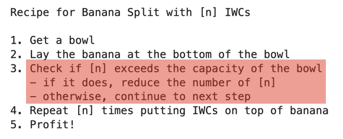

Decision making#
A computer program executes statements in sequential steps. In some cases, the flow of a program will need to be altered depending on a condition

In the case of the recipe, we can see that we need to check for a condition to ensure that it does not overflow the container
The condition can include any combination of the
comparison/boolean operatorswe previously covered (e.g. <,==, >, &, |, !)Depending on the result of the condition (
TRUE/FALSE), the flow of the steps in the program can be altered
Data preparation#
To illustrate the use of conditionals to alter the flow of a program, we will use the example data frame with patient data
df <- data.frame(id=c(20201,20205,20212,20213,20216),
age=c(19,45, 23, 55, 65),
name=c("Alice","Bob","Charlie","David", "Eliza"),
risk=c("low", "med", "high", "high", "med"))
df
| id | age | name | risk |
|---|---|---|---|
| <dbl> | <dbl> | <chr> | <chr> |
| 20201 | 19 | Alice | low |
| 20205 | 45 | Bob | med |
| 20212 | 23 | Charlie | high |
| 20213 | 55 | David | high |
| 20216 | 65 | Eliza | med |
Let us take a row from the data frame
person <- df[1,] # Alice
person
| id | age | name | risk | |
|---|---|---|---|---|
| <dbl> | <dbl> | <chr> | <chr> | |
| 1 | 20201 | 19 | Alice | low |
Having data from a particular patient, we would like use it to make a decision that depends on a set of conditions.
To do this, we use conditional statements to change the flow of the program to output a decision. We will cover the following statements and see how they can be used
ifelseelse if
Using if statement#
The if statement signals that we want to check for a condition
If the condition is
TRUE, it executes the statements enclosed within the{}blockOtherwise, the
{}block is bypassed and the program continues
As an example, we can use an if statement to check if the age is less than 50. If the condition is TRUE, we will print "review later" as the output
if (person$age <50) {
print("review later") # print is a built-in function that prints out text or contents of a variable
}
[1] "review later"
Let us see what happens if the condition is FALSE. In this case, we will check if the age if greater or equal than 50 and print "admit" if this condition is TRUE
if (person$age >=50) {
print("admit")
}
What happened here? There is no output because the condition test (age > 50) is FALSE, the print statement within the {} block is not executed
To handle a case when a condition is
FALSE, we use theelsestatement
Using the else statement#
We can extend the if statement to cover the case when the condition is FALSE by adding an else statement
the
{}block after theifstatement is executed if the condition isTRUEthe
{}block after theelsestatement is executed if the condition isFALSE
We can now write the if...else statements to cover both conditions
age >= 50: print
"admit"age < 50: print
"review later"
# adding an alternate choice with else
if (person$age >= 50) {
print("admit")
} else {
print("review later")
}
[1] "review later"
As we can see, the combination of the if...else statements allows for handling of a binary decision
To have more than 1 decision, we use the
else ifstatement to chain the conditions
Using else if statement to chain conditions#
We can have more than 1 decision point by adding else if statement to test additional conditions after the initial if statement
the
{}block after theifstatement is executed ifTRUEthe
{}block after theelse ifstatement is executed ifTRUEthe
{}block after the finalelsestatement is executed if none of the previous conditions areTRUE
We take another patient from the data frame as an example to check 2 conditions: age and level of risk
person <- df[3,] # Charlie
person
| id | age | name | risk | |
|---|---|---|---|---|
| <dbl> | <dbl> | <chr> | <chr> | |
| 3 | 20212 | 23 | Charlie | high |
Here, we want to admit patients if their age is greater than 50 or if their risk level is high. Patients who do not fit these criteria can reviewed later
We can structure the statements as such
if
age> 50, print"admit"else, if
riskishigh, print"admit"else, print
"review later"
# chaining if statements
if (person$age >50) {
print("admit")
} else if (person$risk =="high") {
print("admit")
} else {
print("review later") }
[1] "admit"
When we see same outcomes from a chain of conditions, we can try to combine the comparisons into a single test using a combination of boolean operators (e.g. AND/OR)
In this case, both conditions of
age>50 or highriskwill have the outcome"admit"We can combine this with a OR operation in the conditional statement instead of
if...else if
# combining comparisons into single if statement
if (person$age >50 | person$risk=="high") {
print("admit")
} else {
print("review later")
}
[1] "admit"
Summary#
Conditional statements alter the flow of the program depending on the outcome of a condition (
TRUE/FALSE)Conditions can use comparison operators (
<,<=,==,>=,>) and boolean operators AND/OR/NOT (&,|,!)The
ifstatementdefined as
if(condition) { code executed }the code is executed only if the condition returns
TRUE
The
ifstatement combined withelsedefined as
if(condition) { code executed if TRUE } else { code executed if FALSE }allows for a binary decision dependent on single condition
The
ifstatement combined withelse ifandelsedefined as
if(condition 1) {code executed if condition 1 TRUE) else if(condition 2) { code executed if condition 2 TRUE) ... else {code executed if no conditions met}allows for testing of multiple conditions
Multiple conditional statements can be combined into a single condition using boolean operators AND/OR (
&,|)
Exercise - Conditionals#
screen <- data.frame(id=c(20201,20205,20212,20213,20216),
age=c(19,45, 23, 55, 65),
sysBP=c(120,150,130,65,155),
contact=c(T,F,T,F,F),
cluster=c(T,T,F,T,F))
screen
| id | age | sysBP | contact | cluster |
|---|---|---|---|---|
| <dbl> | <dbl> | <dbl> | <lgl> | <lgl> |
| 20201 | 19 | 120 | TRUE | TRUE |
| 20205 | 45 | 150 | FALSE | TRUE |
| 20212 | 23 | 130 | TRUE | FALSE |
| 20213 | 55 | 65 | FALSE | TRUE |
| 20216 | 65 | 155 | FALSE | FALSE |
Select patient 4 and store it as pt
Write conditionals to check the following on pt:
if systolic BP is less than 80, print “send to ED”
otherwise if patient has contact or stays near a cluster, print “send for screening”
otherwise if patient if older than 65, print “review in 3 days”
if they do no meet any of these criteria, print “review in 1 week”
# start here
Show code cell content
# solution
pt <- screen[4,]
if (pt$sysBP < 80) {
print("send to ED")
} else if (pt$contact==T | pt$cluster ==T) {
print("send for screening")
} else if (pt$age >65) {
print("review in 3 days")
} else {
print("review in 1 week")
}
[1] "send to ED"